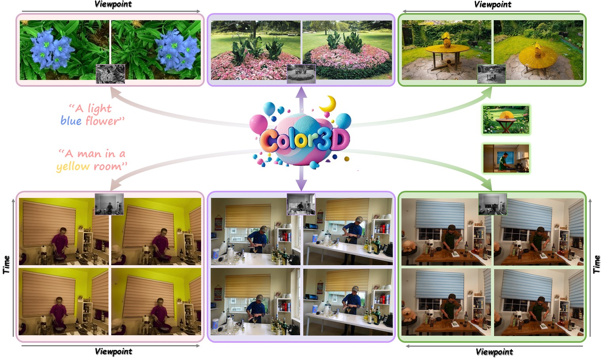
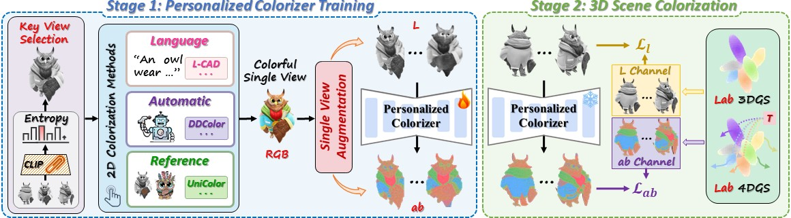

In this work, we present Color3D, a highly adaptable framework for colorizing both static and dynamic 3D scenes from monochromatic inputs, delivering visually diverse and chromatically vibrant reconstructions with flexible user-guided control. In contrast to existing methods that focus solely on static scenarios and enforce multi-view consistency by averaging color variations which inevitably sacrifice both chromatic richness and controllability, our approach is able to preserve color diversity and steerability while ensuring cross-view and cross-time consistency. In particular, the core insight of our method is to colorize only a single key view and then fine-tune a personalized colorizer to propagate its color to novel views and time steps. Through personalization, the colorizer learns a scene-specific deterministic color mapping underlying the reference view, enabling it to consistently project corresponding colors to the content in novel views and video frames via its inherent inductive bias. Once trained, the personalized colorizer can be applied to infer consistent chrominance for all other images, enabling direct reconstruction of colorful 3D scenes with a dedicated Lab color space Gaussian splatting representation. The proposed framework ingeniously recasts complicated 3D colorization as a more tractable single image paradigm, allowing seamless integration of arbitrary image colorization models with enhanced flexibility and controllability. Extensive experiments across diverse static and dynamic 3D colorization benchmarks substantiate that our method can deliver more consistent and chromatically rich renderings with precise user control.

Color3D is a unified controllable 3D colorization framework for both static and dynamic scenes, producing vivid and chromatically rich renderings with strong cross-view and cross-time consistency. Our method supports diverse colorization controls, including language-guided (left), automatic inference (middle), and reference-based (right), showcasing its versatility and practical value.

The overall pipeline of Color3D. Our framework comprises two primary stages. In the first stage, we initially identify the most informative key view from the given monochromatic images and video frames, and employ an off-the-shelf image colorization model to generate a colorized single view. Then, a single view augmentation scheme is elaborated to amplify the data, and the augmented samples are subsequently used to fine-tune a per-scene personalized colorizer. In the second stage, this personalized colorizer is utilized to infer consistent chromatic content of the remaining views or frames, and directly reconstruct the colorful 3D scene with Lab color space 3DGS or 4DGS.
@article{wan2025color3d,
author = {Yecong Wan and Mingwen Shao and Renlong Wu and Wangmeng Zuo},
title = {Color3D: Controllable and Consistent 3D Colorization with Personalized Colorizer},
journal = {arxiv},
year = {2025},
}